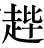

梁孝王武者，孝文皇帝子也，而与孝景帝同母。母，窦太后也。
孝文帝凡四男：长子曰太子，是为孝景帝；次子武；次子参；次子胜。孝文帝即位二年，以武为代王，以参为太原王，以胜为梁王。二岁，徙代王为淮阳王。以代尽与太原王，号曰代王。参立十七年，孝文后二年卒，谥为孝王。子登嗣立，是为代共王。立二十九年，元光二年卒。子义立，是为代王。十九年，汉广关，以常山为限，而徙代王王清河。清河王徙以元鼎三年也。
初，武为淮阳王十年，而梁王胜卒，谥为梁怀王。怀王最少子，爱幸异于他子。其明年，徙淮阳王武为梁王。梁王之初王梁，孝文帝之十二年也。梁王自初王通历已十一年矣。
梁王十四年，入朝。十七年，十八年，比年入朝，留，其明年，乃之国。二十一年，入朝。二十二年，孝文帝崩。二十四年，入朝。二十五年，复入朝。是时上未置太子也。上与梁王燕饮，尝从容言曰：“千秋万岁后传于王。”王辞谢。虽知非至言，然心内喜。太后亦然。其春，吴楚齐赵七国反。吴楚先击梁棘壁，杀数万人。梁孝王城守睢阳，而使韩安国、张羽等为大将军，以距吴楚。吴楚以梁为限，不敢过而西，与太尉亚夫等相距三月。吴楚破，而梁所破杀虏略与汉中分。明年，汉立太子。其后梁最亲，有功，又为大国，居天下膏腴地。地北界泰山，西至高阳，四十余城，皆多大县。
梁孝王刘武，是孝文皇帝的儿子，与孝景帝是同母的兄弟。刘武的母亲就是窦太后。
孝文帝共有四个儿子：长子就是太子，即孝景帝；次子叫刘武；三子叫刘参；四子叫刘胜。孝文帝即位后第二年，封二子刘武为代王，封三子刘参为太原王，封四子刘胜为梁王。过了两年，文帝改封代王为淮阳王。同时把代国全部封给太原王刘参，号称代王。刘参在位共十七年，于孝文帝后元二年（前162年）去世，谥号为孝王。他的儿子刘登继承王位，这就是代共王。代共王刘登在位二十九年，于元光二年（前133年）去世。他的儿子刘义继承王位，这就是现任代王。代王刘义即位十九年以后，正值朝廷扩充关塞，以常山为界限，将代王迁为清河王。这件事发生在元鼎三年（前114年）。
当初，就在刘武被改封为淮阳王之后的第十年，梁王刘胜亡故，谥号为梁怀王。梁怀王是孝文帝的小儿子，文帝对他的宠爱胜过其他儿子。又过了一年，文帝改封淮阳王刘武为梁王。刘武被封为梁王，发生在孝文帝十二年（前168年）。梁王从最开始被封为代王到后来改封梁王，前后有十一年的时间。
梁王十四年（前165年），梁王入朝。十七年、十八年，他又连续两年入朝，并留在京城，直到第二年才回到封国。二十一年，梁王入朝。二十二年，孝文帝去世。二十四年，梁王再次入朝。二十五年，又入朝。当时，景帝还没有确立太子。他与梁王在一起宴饮的时候，曾随口说道：“我死以后，就把帝位传给你。”梁王听了以后连忙推辞。尽管梁王知道景帝所说的不是真心话，但是心里依然很高兴。窦太后也同样十分高兴。这一年的春天，吴、楚、齐、赵等七个诸侯国发动叛乱。吴、楚两国的军队首先进攻梁国的棘壁，杀死了数万人。梁孝王镇守睢阳城，任命韩安国、张羽等为大将军，率军抵挡吴、楚叛军的攻击。吴、楚联军由于受到梁王军队的阻击，一直不敢越过梁国向西进发，与太尉周亚夫等人相持长达三个月之久。后来吴、楚联军被打败，而梁王军队所斩杀、俘虏的叛军数目与汉军一样多。第二年，朝廷立了太子。此后，梁国与朝廷的关系最为亲近，立有战功，又是大国，占据着天下最为肥沃富饶的土地。梁国的地界北到泰山，西到高阳，共有四十余座城池，多数都是较大的县城。
孝王，窦太后少子也，爱之，赏赐不可胜道。于是孝王筑东苑，方三百余里。广睢阳城七十里。大治宫室，为复道【复道：楼阁之间搭建的架空信道。】，自宫连属于平台三十余里。得赐天子旌旗，出从千乘万骑。东西驰猎，拟于天子。出言【：指天子外出，沿途戒严。】，入言警。招延四方豪桀，自山以东游说之士。莫不毕至，齐人羊胜、公孙诡、邹阳之属。公孙诡多奇邪计，初见王，赐千金，官至中尉，梁号之曰公孙将军。梁多作兵器弩弓矛数十万，而府库金钱且百巨万，珠玉宝器多于京师。
二十九年十月，梁孝王入朝。景帝使使持节乘舆驷马，迎梁王于关下。既朝，上疏因留，以太后亲故。王入则侍景帝同辇，出则同车游猎，射禽兽上林中。梁之侍中、郎、谒者着【着：登记。】籍引【籍引：门籍，在竹牒上记出入宫门人员的相关信息。当时出入皇宫要检验门籍。】出入天子殿门，与汉宦官无异。
十一月，上废栗太子，窦太后心欲以孝王为后嗣。大臣及袁盎等有所关说于景帝，窦太后义格【格：止。】，亦遂不复言以梁王为嗣事由此。以事秘，世莫知。乃辞归国。
其夏四月，上立胶东王为太子。梁王怨袁盎及议臣，乃与羊胜、公孙诡之属阴【阴：暗中。】使人刺杀袁盎及他议臣十余人。逐其贼【贼：刺客。】，未得也。于是天子意梁王，逐贼，果梁使之。乃遣使冠盖相望【冠盖相望：形容使者往来不断。】于道，复按【按：审查，追究。】梁，捕公孙诡、羊胜。公孙诡、羊胜匿王后宫。使者责二千石急，梁相轩丘豹及内史韩安国进谏王，王乃令胜、诡皆自杀，出之。上由此怨望于梁王。梁王恐，乃使韩安国因长公主谢罪太后，然后得释。
梁孝王是窦太后的小儿子，窦太后对他非常宠爱，赏赐给他的财宝更是不计其数。于是梁孝王修建东苑，方圆三百多里。睢阳城扩展至七十里。他大兴土木，修筑宫殿，建造架空信道，从宫殿一直连接到平台，长达三十余里。他有朝廷赐予的天子旌旗，外出的时候跟随他的车马成千上万。射猎时东奔西驰，气势犹如天子一般。他出宫时称“”，入宫时称“警”。他还广纳四方的豪杰，凡是崤山以东的游说之士，没有不来投奔梁王的。像齐国的羊胜、公孙诡、邹阳等人就是这一类人。公孙诡善使奇谋邪计，他初次拜见梁王时，得到一千斤黄金的赏赐，做到中尉一职，梁国尊称他为公孙将军。梁国制造了大量兵器，弩弓、长矛多达数十万件，而府库里的金钱更是多达亿万，珠玉、宝器比京师长安还要多。
二十九年（前150年）十月，梁孝王进京朝见景帝。景帝派遣使者拿着符节乘坐四匹马拉的车，赶赴关前迎接梁孝王。朝见完毕之后，梁王上疏请求留在京城，因为他是太后至亲的缘故。梁王入宫的时候就陪着景帝同乘辇车，出宫的时候就与景帝同车游猎，在上林苑射杀鸟兽。梁国的侍中、郎官、谒者只要登记便可以在天子的宫殿自由出入，与朝廷的官员没有什么区别。
十一月，皇上废掉栗太子刘荣，窦太后想将梁孝王立为继承人。朝中大臣以及袁盎等人用有关确立太子的法律劝说景帝，窦太后的建议因此受阻，从此以后她也就不再向景帝提起立梁王为继承人的事了。由于这件事非常隐秘，因此世人都不知道。梁孝王便告辞返回梁国。
这一年夏季四月，皇上立胶东王刘彻为太子。梁王对袁盎和参与讨论继承人之事的大臣十分怨恨，便与羊胜、公孙诡等人共同谋划，暗中派人刺杀袁盎以及其他参与议论此事的十多位大臣。官府缉捕凶手，但没有抓获。于是皇上便怀疑梁王，后来抓到凶手，果然是梁王所派。于是景帝派遣使臣前后相继地去梁国反复核查，并且逮捕公孙诡、羊胜。公孙诡、羊胜躲在梁王后宫里。朝廷派来的使臣十分急迫地责问梁国年俸二千石的官员，梁国相国轩丘豹和内史韩安国一同进谏梁王，梁王这才让羊胜、公孙诡自杀，然后把二人交出来。皇上从此便对梁王产生了怨恨。梁王十分害怕，就派韩安国通过长公主向窦太后谢罪，这才得到宽恕。
上怒稍解，因上书请朝。既至关，茅兰说王，使乘布车【布车：以布为帷幔的车。】，从两骑入，匿于长公主园。汉使使迎王，王已入关，车骑尽居外，不知王处。太后泣曰：“帝杀吾子！”景帝忧恐。于是梁王伏斧质【斧质：古代一种酷刑，把人置人于铁砧上，用斧头砍斫。质，铁砧。】于阙下，谢罪，然后太后、景帝大喜，相泣，复如故。悉召王从官入关。然景帝益疏王，不同车辇矣。
三十五年冬，复朝。上疏欲留，上弗许。归国，意忽忽不乐。北猎良山，有献牛，足出背上，孝王恶之。六月中，病热，六日卒，谥曰孝王。
孝王慈孝，每闻太后病，口不能食，居不安寝，常欲留长安侍太后。太后亦爱之。及闻梁王薨，窦太后哭极哀，不食，曰：“帝果杀吾子！”景帝哀惧，不知所为。与长公主计之，乃分梁为五国，尽立孝王男五人为王，女五人皆食汤沐邑。于是奏之太后，太后乃说，为帝加一餐。
皇上的怨气渐渐地有所消解，梁孝王于是上书请求入朝晋见。梁王到达函谷关以后，茅兰劝他乘坐布车，带着两名骑马的随从入关，躲藏在长公主的园子里。朝廷派使者迎接梁王，此时梁王已经入关，而随从车骑全都停留在关外，不知道梁王在哪里。窦太后哭着说：“皇上一定杀害了我的儿子！”景帝也为此感到忧虑恐惧。于是，梁王背负刑具伏在宫殿门前谢罪，太后和景帝见此情景非常高兴，相对而泣，感情又和以前一样了。景帝把梁王的随从官员全部召入关中。然而景帝渐渐疏远了梁王，不再与他同乘一辆辇车了。
三十五年（前144年）冬天，梁王再次进京朝见天子。上疏表明自己打算留在京师，皇上没有批准。梁王回国以后，一直闷闷不乐。后来到北边的良山游猎，有人献了一头牛，脚长在了背上，梁王很不高兴。到了六月中旬，梁王患上热病，只过了六天就去世了，死后谥号为孝王。
梁孝王非常孝顺，他每次听说窦太后生病就寝食难安，常想留在京城长安侍奉母后。窦太后也很宠爱他。等到听说梁王去世，窦太后哭得极为悲伤，饭也不吃，说：“皇上果然杀害了我的儿子！”景帝又哀痛又害怕，不知如何是好。他与长公主商量这件事，于是将梁国一分为五，将梁孝王刘武的五个儿子全都封为王，五个女儿则全部获赐汤沐邑。然后把这些事情上报窦太后，太后这才高兴起来，为景帝的这种做法而加了一顿饭。
梁孝王长子买为梁王，是为共王；子明为济川王；子彭离为济东王；子定为山阳王；子不识为济阴王。
孝王未死时，财以巨万计，不可胜数。及死，藏府余黄金尚四十余万斤，他财物称是。
梁共王三年，景帝崩。共王立七年卒，子襄立，是为平王。
梁平王襄十四年，母曰陈太后。共王母曰李太后。李太后，亲平王之大母【大母：祖母。】也。而平王之后姓任，曰任王后。任王后甚有宠于平王襄。初，孝王在时，有罍樽【罍樽：饰有云雷状花纹的酒尊。】，直【直：通“值”。】千金。孝王诫后世，善保罍樽，无得以与人。任王后闻而欲得罍樽。平王大母李太后曰：“先王有命，无得以罍樽与人。他物虽百巨万，犹自恣也。”任王后绝欲得之。平王襄直使人开府取罍樽，赐任王后。李太后大怒，汉使者来，欲自言，平王襄及任王后遮止，闭门，李太后与争门，措【措：通“笮”，挤压。】指，遂不得见汉使者。李太后亦私与食官长及郎中尹霸等士通乱，而王与任王后以此使人风止李太后，李太后内有淫行，亦已。后病薨。病时，任后未尝请病；薨，又不持丧。
梁孝王刘武的长子刘买即位为梁王，这就是梁共王；二子刘明被封为济川王；三子刘彭离被封为济东王；四子刘定被封为山阳王；五子刘不识被封为济阴王。
梁孝王在世的时候，财产数以亿计，数也数不清。等到他死了以后，府库里剩余的黄金还有四十多万斤，其他财产也都相当于这个数目。
梁共王三年（前141年），景帝去世。梁共王在位七年以后去世，他的儿子刘襄继承王位，这就是梁平王。
梁平王刘襄即位之后过了十四年，他的母亲是陈太后。梁共王的母亲是李太后。李太后是梁平王的亲祖母。梁平王的王后姓任，称为任王后。任王后很受刘襄宠爱。当初梁孝王活着的时候，有一只罍樽，价值可达千金。梁孝王曾经告诫后人，要妥善保管这只罍樽，不得把它送给别人。任王后听说以后就想得到这只罍樽。梁平王的祖母李太后说：“先王有过命令，不许将罍樽送给他人。至于别的宝物，尽管价值亿万，但还可以随便挑选。”可是任王后特别想得到罍樽。于是，梁平王直接派人打开府库取出罍樽，将它赐给了任王后。李太后知道以后大怒，朝廷的使者来到梁国，太后就打算亲自将此事告知汉使，平王和任王后极力阻拦她，把门关上，而李太后争着要开门，结果手指夹在了门缝里，就这样，她没能见到汉使。李太后也曾暗地里与食官长和郎中尹霸等人通奸，梁平王和任王后曾经派人暗示以阻止她，李太后因为自己有过淫乱行为，于是也就作罢了。后来，李太后因病去世。李太后患病期间，任王后没有请安探望；病故以后，又没有居丧守孝。
元朔中，睢阳人类犴反者，人有辱其父，而与淮阳太守客出同车。太守客出下车，类犴反杀其仇于车上而去。淮阳太守怒，以让梁二千石。二千石以下求反甚急，执反亲戚。反知国阴事，乃上变事，具告知王与大母争樽状。时丞相以下见知之，欲以伤梁长吏【长吏：地位较高的官员。《汉书·百官公卿表》记载：“秩四百石至二百石，是为长吏。”。】，其书闻天子。天子下吏验问，有之。公卿请废襄为庶人。天子曰：“李太后有淫行，而梁王襄无良师傅，故陷不义。”乃削梁八城，枭任王后首于市。梁余尚有十城。襄立三十九年卒，谥为平王。子无伤立为梁王也。
济川王明者，梁孝王子，以桓邑侯孝景中六年为济川王。七岁，坐射杀其中尉，汉有司请诛，天子弗忍诛，废明为庶人，迁房陵，地入于汉为郡。
济东王彭离者，梁孝王子，以孝景中六年为济东王。二十九年，彭离骄悍，无人君礼，昏暮私与其奴、亡命少年数十人行剽【行剽：犹打劫。】杀人，取财物以为好。所杀发觉者百余人，国皆知之，莫敢夜行。所杀者子上书言。汉有司请诛，上不忍，废以为庶人，迁上庸，地入于汉，为大河郡。
山阳哀王定者，梁孝王子，以孝景中六年为山阳王。九年卒，无子，国除，地入于汉，为山阳郡。
济阴哀王不识者，梁孝王子，以孝景中六年为济阴王。一岁卒，无子，国除，地入于汉，为济阴郡。
元朔年间，淮阳有个人名叫类犴反，有人侮辱了他的父亲，而这个人有一次与淮阳太守的客人乘坐一辆马车外出。太守的客人下车走了，类犴反就在车上将仇人杀死，然后逃走。淮阳太守大怒，因为此事责备梁国二千石官员。二千石以下的官员搜捕类犴反非常急迫，抓捕了他的亲属。类犴反知道梁国宫中的那些隐秘之事，就向朝廷上书，详细地陈述了梁平王与祖母李太后争夺罍樽的事情。当时，朝中丞相以下的官员知道这件事以后，想借此打压梁国地位较高的官员，于是将上书呈报给天子。天子将此事交给手下的官吏查问，确实有这样的事。朝中的公卿大臣都请求将梁平王刘襄贬为庶人。天子说：“李太后有过淫乱行为，梁王刘襄没有好老师，所以才陷于如此不义的境地。”于是下令削减梁国八个城的封地，在集市上将任王后枭首示众。此后梁国还剩下十座城。刘襄在位三十九年后去世，谥号为平王。他的儿子刘无伤立为梁王。
济川王刘明，是梁孝王的次子，在孝景帝中元六年（前144年），由桓邑侯升为济川王。七年之后，他由于射杀自己的中尉而获罪，朝廷的主管官员请求将他杀掉，天子不忍，将他废黜为庶人，迁到房陵，其封地则收归朝廷，成为朝廷直接管辖的一个郡。
济东王刘彭离，是梁孝王的三儿子，于孝景帝中元六年（前144年）被封为济东王。刘彭离在位二十九年，十分骄横凶悍，根本不讲究作为人君的礼仪，夜间私自带领手下奴仆、亡命少年数十人打劫杀人，将夺取他人财物作为爱好。被他所杀害的，仅仅被发现的就有一百多人，全国上下都知道此事，再没有人敢在夜间出行。被杀者的儿子上书朝廷状告刘彭离。主管官员请求杀掉他，可是皇上不忍，于是将他废为庶人，迁到上庸，其封地收归朝廷，设为大河郡。
山阳哀王刘定，是梁孝王的四儿子，于孝景帝中元六年（前144年）被封为山阳王。刘定在位九年后去世，由于没有儿子，因此封国被废除，其封地收归朝廷，设为山阳郡。
济阴哀王刘不识，是梁孝王的五儿子，于孝景帝中元六年（前144年）被封为济阴王。他在位一年便去世了，也没有儿子，因此封国被废除，封地收归朝廷所有，设为济阴郡。
太史公曰：梁孝王虽以亲爱之故，王膏腴之地，然会汉家隆盛，百姓殷富，故能植其财货，广宫室，车服拟于天子。然亦僭矣。
太史公说：梁孝王刘武虽然凭借自己是景帝的亲兄弟、太后的爱子的缘故而被封在富饶肥沃的地区为王，然而当时正值汉朝兴盛，百姓富足，他因此得以积蓄财富，扩建宫室，车马服饰比拟天子。而这也算得上是僭越了。
褚先生曰：臣为郎时，闻之于宫殿中老郎吏好事者称道之也。窃以为令梁孝王怨望，欲为不善者，事从中生。今太后，女主也，以爱少子故，欲令梁王为太子。大臣不时正言其不可状，阿意治小，私说意以受赏赐，非忠臣也。齐如魏其侯窦婴之正言也，何以有后祸？景帝与王燕见【燕见：古代帝王闲居时召见或接见臣子。】，侍太后饮，景帝曰：“千秋万岁之后传王。”太后喜说。窦婴在前，据地【据地：以手按着地，指伏地。】言曰：“汉法之约，传子适孙，今帝何以得传弟，擅乱高帝约乎！”于是景帝默然无声。太后意不说。
故成王与小弱弟立树下，取一桐叶以与之，曰：“吾用封汝。”周公闻之，进见曰：“天王封弟，甚善。”成王曰：“吾直与戏耳。”周公曰：“人主无过举，不当有戏言，言之必行之。”于是乃封小弟以应县。是后成王没齿【没齿：指一辈子。】不敢有戏言，言必行之。《孝经》曰：“非法不言，非道不行。”此圣人之法言也。今主上不宜出好言于梁王。梁王上有太后之重，骄蹇日久，数闻景帝好言，千秋万世之后传王，而实不行。
褚先生说：我在做郎官的时候，从宫中一些喜欢说长道短的老郎吏那里听过关于梁孝王的事。我私下里认为，促使梁孝王不满、图谋皇位的祸根来自朝廷。当今的窦太后，是汉朝的女主人，她由于宠爱小儿子，所以想让梁孝王做太子。当时大臣们不但没有及时指出这样做不合适，还一味地阿谀奉承，说些微不足道的小事，私下讨好太后以求得奖赏，不是忠臣所为。如果大臣们都像魏其侯窦婴那样直言以对，又怎么会出现后来的灾祸呢？景帝与梁孝王在闲暇时会面，侍奉窦太后饮酒，景帝曾对梁孝王说：“我死以后将把皇位传给你。”太后听了非常高兴。当时窦婴也在席前，以手伏地道：“根据汉朝的法律，皇位应该传给儿子、传给嫡孙，如今皇上怎么能把皇位传给弟弟，擅自破坏当初高帝定下的法律呢！”于是景帝沉默不语。窦太后心中十分不悦。
过去周成王曾与幼小的弟弟站在树下，将一片梧桐叶交给弟弟，说：“我就用这片叶子封你。”周公听说以后，进见成王说：“天子分封自己的弟弟，这很好。”成王说：“我只不过是跟他开个玩笑而已。”周公说：“君主不应该有不得当的举动，也不应该有戏言，凡事只要说了就必须做到。”于是成王就把应县封给了他的小弟。从那时起，成王终生都不敢有戏言，只要说了就一定做到。《孝经》中说：“凡是不合法度的话就不应该说，不合道理的事就不应该做。”这是圣人留下的明训。当今的皇上实在不应该用好听的话向梁王许愿。梁王被窦太后所看重，骄横傲慢的性格已经形成很久了，又多次听景帝许愿说好话，死后把皇位将传给自己，而实际上却并未实行。
又诸侯王朝见天子，汉法凡当四见耳。始到，入小见；到正月朔旦，奉皮荐璧玉贺正月，法见；后三日，为王置酒，赐金钱财物；后二日，复入小见，辞去。凡留长安不过二十日。小见者，燕见于禁门内，饮于省中，非士人所得入也。今梁王西朝，因留，且半岁。入与人主同辇，出与同车。示风以大言而实不与，令出怨言，谋畔逆【畔逆：背叛。畔，通“叛”。】，乃随而忧之，不亦远乎！非大贤人，不知退让。今汉之仪法，朝见贺正月者，常一王与四侯俱朝见，十余岁一至。今梁王常比年入朝见，久留。鄙语【鄙语：俗语。】曰“骄子不孝”，非恶言也。故诸侯王当为置良师傅，相忠言之士，如汲黯、韩长孺等，敢直言极谏，安得有患害！
另外，各诸侯王进京朝见，按照汉朝法律的规定，总共应当朝见四次。刚到京城时，应当入宫觐见，称为“小见”；到了正月初一的早晨，应该捧着皮垫托着璧玉向皇帝祝贺正月，称为“法见”；再过三天，皇帝为诸侯王设置酒宴，赏赐金钱财物；再过两天，诸侯王再次进宫小见，然后辞别离去。凡是诸侯王朝见天子，居留京城长安总共不超过二十天。所谓小见，就是皇帝闲暇时在宫内召见，在王宫禁地宴饮，这不是普通士人能进去的。现在梁孝王向西赶赴京城朝见皇帝，趁机在宫中逗留将近半年。入宫的时候与皇帝同乘一辆辇车，外出的时候又与皇帝同乘一车。皇帝向他许诺一些大话而实际上并未兑现，致使梁孝王口出怨言，图谋造反，于是皇帝又跟着为他担忧，这岂不是太违背道理了啊！不是大贤之人，不知道谦虚退让之理。按照当今汉朝的礼仪制度，朝见天子祝贺正月，通常是一个诸侯王与四个侯同时朝见，十几年才有一次这样的机会。如今梁孝王经常连年入京朝见，而且留居很长时间。俗话说“骄纵的孩子不知孝顺”，这句话说得一点不错。所以说，应当为诸侯王安排优秀的太傅，拜忠诚而敢于直言的人为相，就像汲黯、韩长孺等人那样，敢于直言极谏，如果这样，又怎么会有祸患发生呢！
盖闻梁王西入朝，谒窦太后，燕见，与景帝俱侍坐于太后前，语言私说。太后谓帝曰：“吾闻殷道亲亲【亲亲：谓亲其弟而授之。】，周道尊尊【尊尊：谓尊祖之正体。】，其义一也。安车大驾，用梁孝王为寄。”景帝跪席举身曰：“诺。”罢酒出，帝召袁盎诸大臣通经术者曰：“太后言如是，何谓也？”皆对曰：“太后意欲立梁王为帝太子。”帝问其状，袁盎等曰：“殷道亲亲者，立弟。周道尊尊者，立子。殷道质，质者法天，亲其所亲，故立弟。周道文，文者法地，尊者敬也，敬其本始，故立长子。周道，太子死，立适孙。殷道，太子死，立其弟。”帝曰：“于公何如？”皆对曰：“方今汉家法周，周道不得立弟，当立子。故《春秋》所以非宋宣公。宋宣公死，不立子而与弟。弟受国死，复反之与兄之子。弟之子争之，以为我当代父后，即刺杀兄子。以故国乱，祸不绝。故《春秋》曰‘君子大居正，宋之祸宣公为之’。臣请见太后白之。”袁盎等入见太后：“太后言欲立梁王，梁王即终，欲谁立？”太后曰：“吾复立帝子。”袁盎等以宋宣公不立正，生祸，祸乱后五世不绝，小不忍害大义状报太后。太后乃解说，即使梁王归就国。而梁王闻其义出于袁盎诸大臣所，怨望，使人来杀袁盎。袁盎顾之曰：“我所谓袁将军者也，公得毋误乎？”刺者曰：“是矣！”刺之，置其剑，剑着身。视其剑，新治。问长安中削厉工，工曰：“梁郎某子来治此剑。”以此知而发觉之，发使者捕逐之。独梁王所欲杀大臣十余人，文吏穷本之，谋反端颇见。太后不食，日夜泣不止。景帝甚忧之，问公卿大臣，大臣以为遣经术吏往治之，乃可解。于是遣田叔、吕季主往治之。此二人皆通经术，知大礼。来还，至霸昌厩，取火悉烧梁之反辞，但空手来对景帝。景帝曰：“何如？”对曰：“言梁王不知也。造为之者，独其幸臣羊胜、公孙诡之属为之耳。谨以伏诛死，梁王无恙也。”景帝喜说，曰：“急趋谒太后。”太后闻之，立起坐餐，气平复。故曰，不通经术知古今之大礼，不可以为三公及左右近臣。少见之人，如从管中窥天也。
听说梁孝王西进京城朝见时，在闲暇时间拜见窦太后，与景帝一起陪坐在太后面前，高兴地谈论家中的私事。窦太后对景帝说：“我听说殷商时期的制度是亲近兄弟，周朝的制度是尊重先祖，二者的道理其实都是一样的。我离开人世以后，就把梁孝王托付给你了。”景帝跪在席子上挺直身子答道：“是。”酒宴结束后景帝出去，将袁盎等通晓经术的大臣召集在一起，问道：“太后说这种话，究竟是什么意思呢？”众大臣齐声回答道：“太后想立梁王为皇上的太子。”景帝进一步询问其中的道理，袁盎等人回答说：“殷商王朝的制度是天子亲近自己的兄弟，就是说要传位给弟弟。周朝的制度是天子要尊重先祖，就是说要传位给儿子。殷朝崇尚质朴，所以效法上天，亲近与他们亲近的人，所以立弟弟为继承人。周朝崇尚文饰，所以效法大地，‘尊’就是‘敬’的意思，敬重其本源，所以立长子为继承人。按照周朝的制度，太子死了，就立嫡长孙为继承人。而殷朝的制度则是太子死后立他的弟弟为继承人。”景帝问道：“诸位又如何看待此事呢？”众大臣回答说：“如今汉朝效法周朝的制度，按照周朝的制度就不应该立弟弟，而应当立儿子。所以《春秋》根据这一点对宋宣公加以指责。宋宣公去世，没有传位给儿子，而是传给弟弟。这样弟弟就成了国君，等到弟弟死后，又把国君之位还给他哥哥的儿子。弟弟的儿子争夺君位，认为自己应当接替父亲的君位，就杀了宣公的儿子。正因为这样，宋国大乱，灾祸不断。所以《春秋》说‘君子应该遵守常道，宋国的祸患是宋宣公一手造成的’。我们请求面见太后，向她阐明这个道理。”袁盎等人进宫面见窦太后，说道：“太后说打算立梁王为太子，那么梁王去世以后，又打算立谁呢？”窦太后说：“我会再立当今皇上的儿子。”袁盎等人就将当年宋宣公不立嫡长子而引发祸乱，灾难绵延五代而不能断绝，小处不忍而伤及大义的道理向太后说明。窦太后这时才明白传位给儿子的道理，因而非常高兴，随后就让梁王回到封国去了。而梁孝王听说这样的议论是由袁盎等大臣提出来的，非常憎恨他们，便派人刺杀袁盎。袁盎转过头来望着刺客，说道：“我是所谓的袁将军，你不会是认错人了吧？”刺客说：“我杀的就是你！”于是一剑刺中袁盎，然后把剑丢在袁盎身上。官府查看刺客留下的剑，发现是新造的。向长安城里铸造刀剑的工匠询问，工匠说：“这柄剑是梁国的一个郎官定做的。”官府由此得到线索并发现了刺客，于是派使者前去捉拿刺客。仅梁孝王所要刺杀的大臣就有十余人，负责审理此案的官吏究本溯源，发现梁孝王谋反的意图十分明显。窦太后知道此事以后不吃饭，昼夜不停地哭泣。景帝对此十分忧虑，于是向公卿大臣询问解决的办法，大臣们认为应该派通晓经术的官吏前去查办，才可以了结此案。于是景帝派田叔和吕季主前去查办这个案子。他们两个人都通晓经术，懂得大礼。办完案子回来的时候，二人到达霸昌厩，将梁孝王谋反的供词全部烧掉，只空着两手向景帝汇报办案的情况。景帝问他们：“案子办得怎么样？”二人答道：“梁王并不知情。真正参与此事的，只不过是他的宠臣羊胜、公孙诡等人罢了。我们严格按照法律将他们诛杀，梁王平安无事。”景帝非常高兴，说：“赶快去面见太后。”窦太后听说此事以后，当即坐起来吃饭，心情也恢复了平和。所以说，不通晓经术，不懂古今大礼，就绝对不能担任三公及天子的左右近臣。那些孤陋寡闻之人，就好比从管中看天一样。